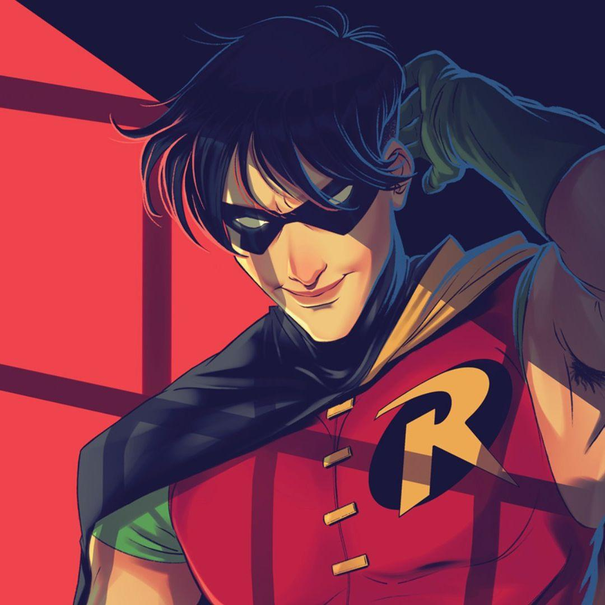
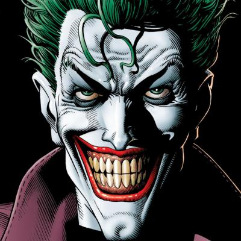
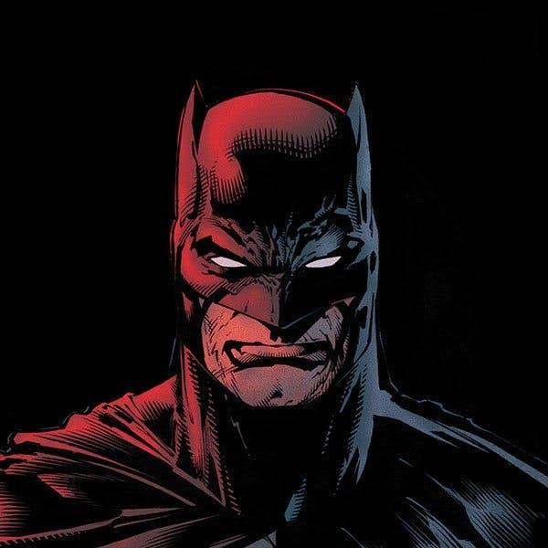

Héroes y aliados
- Batman - El Caballero de la Noche.
- Robin - Aliado de Batman.
- Alfred - Mayordomo y consejero.
- Batgirl - Heroína de Gotham.

Villanos
- Joker
- El Pingüino
- Enigma
- Dos Caras

Batman

Es un detective que utiliza su inteligencia y sus habilidades para resolver casos.